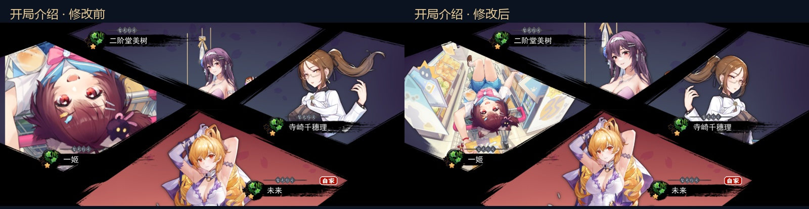
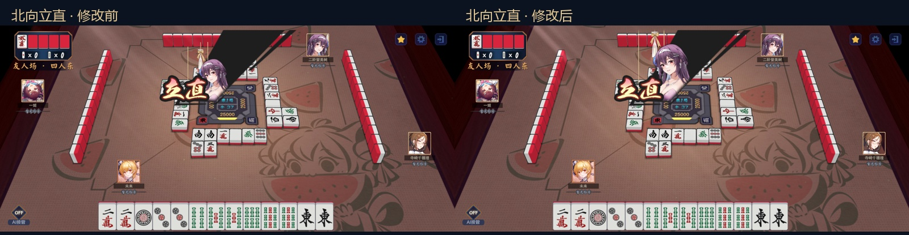
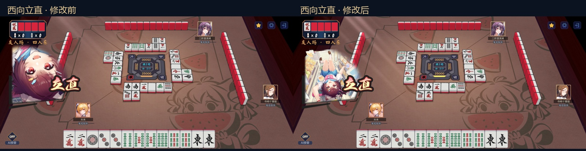
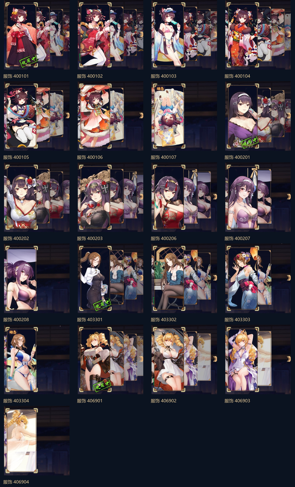
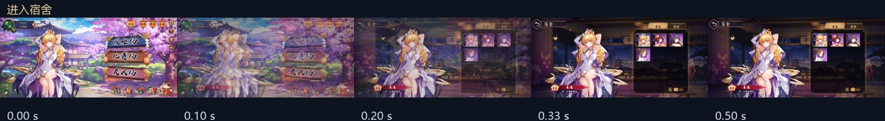
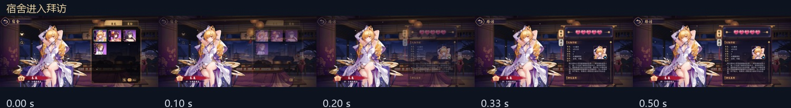
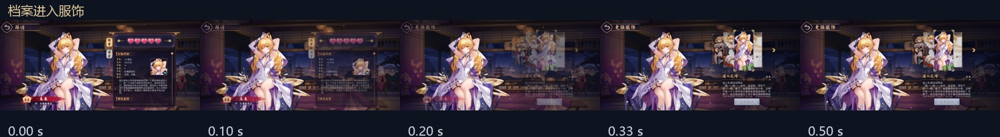

云间日麻 · 界面修正 R2
按最新标注图继续修正，并接入原版立绘构图参数。下面是当前工程的实际 Unity 截图与交互演示。
宿舍 / 拜访 / 服饰 / 鉴赏 / 排序非牌桌樱花大厅立绘设置与保存立绘构图前后对照
同一套源图片，读取统一的场景规则和皮肤配置。原版配置会针对每套皮肤保存美术调整；旧皮肤则使用裁切框与头像中心计算。这里没有按这四名角色另写位置特例。

开局介绍
北向立直
西向立直21 套服饰卡片抽查

点击放大；来自实际 Unity 服饰页截图。页面转场逐帧查看

进入宿舍 · 真实录制帧
宿舍进入拜访 · 真实录制帧
档案进入服饰 · 真实录制帧1 · 宿舍
2 · 拜访
3 / 4 · 跳转与服饰
5 · 立绘细看
6 · Live2D / 静态切换
7 · 雀士排序
8 / 9 · 樱花与大厅
原版立绘构图
16:9 布局